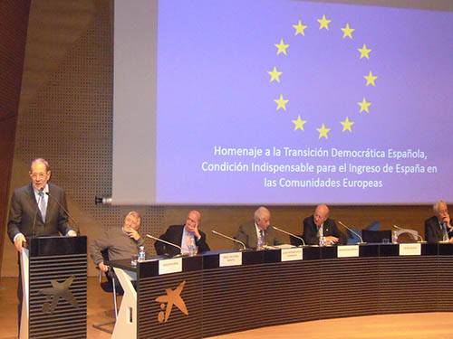
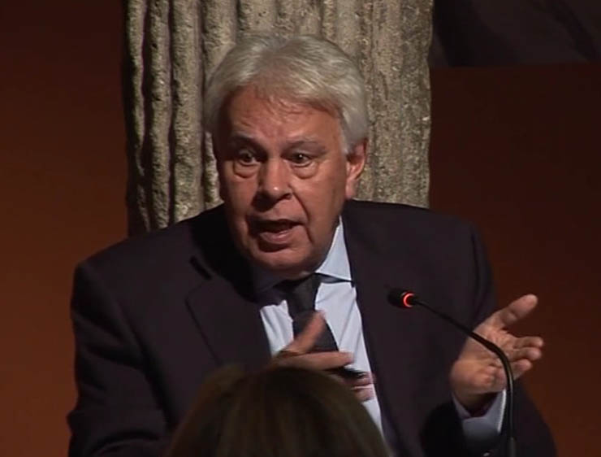
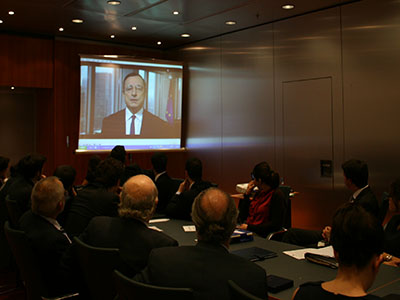

“A prestigious Master's”
“A leader in training specialists in European affairs for ten years”
“A prestigious Master's programme”
“A vintage Master's”
“A Master's recognised in Spain and across Europe”
“When it comes to the European Union, this is the Master's”
“A Master's built on great experience and dedication”
“A leading Institute”
“A high-quality Master's”
“A magnificent Master's”
“One of the leading centres for postgraduate European studies in the whole EU”
“A well-earned reputation”
“The best Master's in Spain and one of the best in Europe”
“This Institute deserves credit for supporting […] the European and pro-European vocation that can only be built by developing human capital”
-

-
15/02/18 Tribute to the Spanish democratic transition, chaired by Javier Solana Madariaga, former Minister of Foreign Affairs, former NATO Secretary General and first EU High Representative for the Common Foreign and Security Policy
The tribute focused on seven leading figures from Aragón in the Transition
-

-

-

-